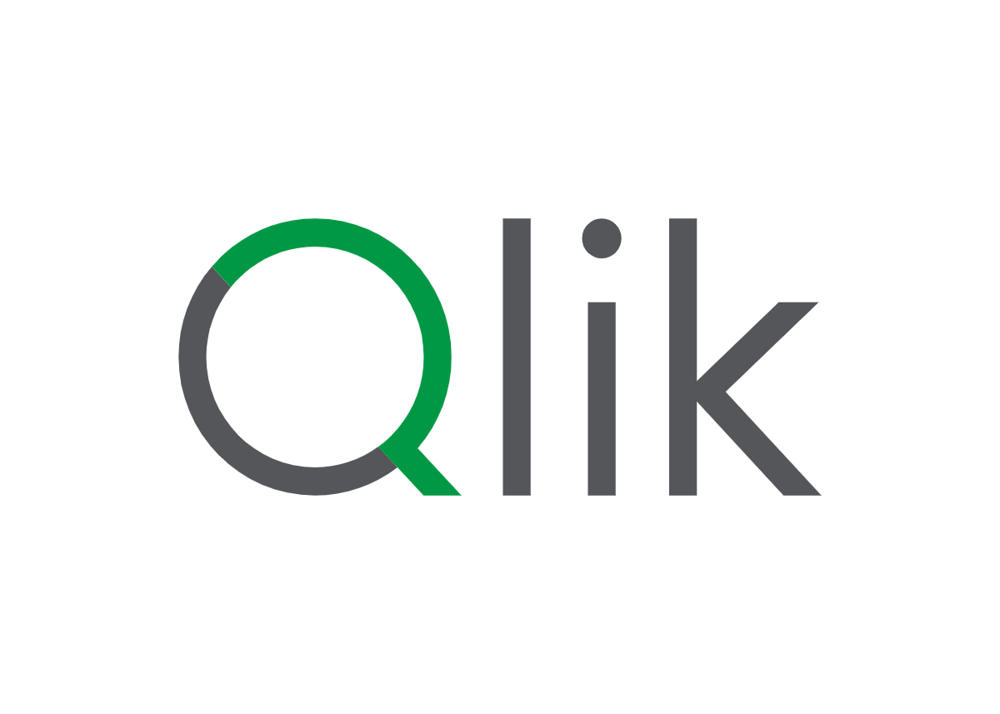

Desenvolvimento nas principais tecnologias do mercado
-

-

-

-

-

-

-

- 
-

-

Sites criados em bootcamps e projetos pessoais.
Repositórios de Consulta e Aprendizado.
Thiago F.S Dias. Fã de games, artes e tecnologia, meu primeiro "Hello World" foi na pré-adolescência quando tive contato com HTML, CSS e um pouco de JavaScript no curso técnico da ETEC de minha cidade. Atualmente curso Gestão de TI na FATEC de Tatui e atuo como analista de negócio na função de auxiliar administrativo na Cybelar Matriz.
Prof. Wilson Roberto Ribeiro de Camargo - Faculdade de Tecnologia de Tatuí
Curso superior de tecnologia focado em gestão de projetos de TI, infraestrutura, segurança da informação e administração de sistemas.
Escola Técnica Estadual Doutor Nelson Alves Vianna
Curso técnico focado em desenvolvimento de sistemas, programação, banco de dados e análise de sistemas.
Escola Técnica Estadual Doutor Nelson Alves Vianna
Curso técnico em administração com foco em gestão empresarial, recursos humanos e processos administrativos.
Bootcamp da DIO e Bradesco. Mai 2025.
Experiência teórica e prática em desenvolvimento Java, com foco em banco de dados relacionais (SQL) e não relacionais (MongoDB), além de integração com plataformas em nuvem como Azure e Azure OpenAI. Atuação com Inteligência Artificial, desenvolvimento e documentação de APIs RESTful, aplicações Java Cloud Native e uso do framework Spring Boot.
Bootcamp da DIO e Ri Happy. Jul 2025.
Experiência teórica e prática em desenvolvimento Front-end, com foco em HTML, CSS e JavaScript. Aprendizado de boas práticas de desenvolvimento, responsividade e acessibilidade, além de criação de interfaces interativas. Este projeto de portifólio inclusive foi desenvolvido durante o bootcamp.
Nordica. Set 2023 a Jan 2025
Experiência teórica e prática em Qlik Cloud e Alteryx, com foco em análise de dados, criação de dashboards e automação de processos. Aprendizado de técnicas avançadas de visualização de dados e integração com outras ferramentas.
Fundação Brasdesco. Jan 2025
Experiência teórica em Lei Geral de Proteção de Dados (LGPD), com foco em princípios, direitos dos titulares e obrigações dos controladores e operadores de dados.
Atuação no suporte à gestão de projetos e liderança de equipe, com foco na análise de requisitos técnicos e operacionais para o desenvolvimento de sistemas. Responsável pela comunicação com clientes internos e externos, suporte às lojas e elaboração de documentação técnica de procedimentos, APIs e sistemas integrados.
Atendimento a clientes via plataformas de Marketplaces (Meli, B2W, Magalu e Amazon) e auxilio de suporte tecnológico as lojas (meio periodo no TI).
Responsável pelo atendimento a clientes em plataformas de marketplaces (Mercado Livre, B2W, Magalu e Amazon), além da co-criação e gestão de um projeto de torre de controle logístico. O projeto teve início em planilhas Excel e foi posteriormente evoluído para um sistema integrado, desenvolvido em parceria com a equipe de TI.
Auxiliar administrativo de compradores e analistas, com foco em suporte a lojas e a logística.
Estou disponível para serviços e novas conexões. Contate-me via e-mail e conecte-se comigo através das minhas redes sociais.